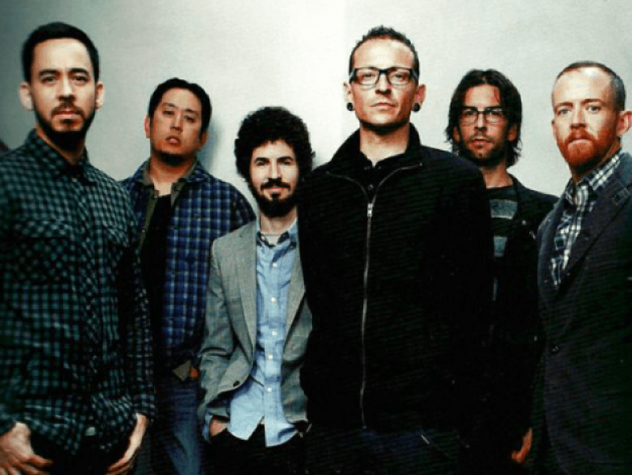

Formed in 1996, Linkin Park rose to international fame with their debut studio album, Hybrid Theory in 2000, which became certified Diamond by the Recording Industry Association of America.
Having adapted nu metal and rap metal to a radio-friendly yet densely layered style in their first two albums, the band explored other genres on their third album, Minutes to Midnight, which also topped the Billboard 200. Linkin Park is among the best-selling bands of the 21st century and the world's best-selling music artists, having sold over 100 million records worldwide.
Having adapted nu metal and rap metal to a radio-friendly yet densely layered style in their first two albums, the band explored other genres on their third album, Minutes to Midnight, which also topped the Billboard 200. Linkin Park is among the best-selling bands of the 21st century and the world's best-selling music artists, having sold over 100 million records worldwide.
Linkin Park is an American rock band from Agoura Hills, California. The band's current lineup comprises vocalist/rhythm guitarist Mike Shinoda, lead guitarist Brad Delson, bassist Dave Farrell, DJ/keyboardist Joe Hahn, and drummer Rob Bourdon, all of whom are founding members. Vocalists Mark Wakefield and Chester Bennington and bassist Kyle Christner are former members of the band.
Categorized as alternative rock, Linkin Park has experimented with their music throughout their career by incorporating heavy metal, hard rock, hip hop, pop, and electronica.
Categorized as alternative rock, Linkin Park has experimented with their music throughout their career by incorporating heavy metal, hard rock, hip hop, pop, and electronica.
MILESTONES
1996-2000: Linkin Park was founded
2000-2002: Hybrid Theory and Reanimation released
2002-2004: Linkin Park spent touring around the United States
2008-2011: The band was nominated for six Billboard Awards
2015-2017: One More Light and Bennington's death
©2020 LINKIN PARK. ALL RIGHTS RESERVED TERMS & CONDITIONS // PRIVACY POLICY // AD CHOICES // COOKIE POLICY